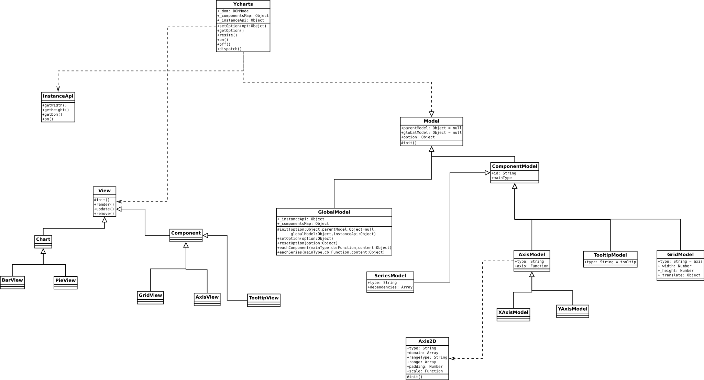

继承关系阐释
可视化库采用的是类似MVC的设计模式，因此代码组织也是严格按照该设计模式来进行的；这里主要说明的是M和V层的继承关系；
M层的继承关系
- M层的基类是Model类,位于src/model/Model.js文件中，通常不允许直接实例化该类；
- GlobalModel继承自Model,直接对应图表的M层，GlobalModel位于src/Model/GlobalModel.js文件中；
- ComponentModel也继承自Model，是图表内部的组件的M层,ComponentModel位于src/Model/ComponentModel.js文件中；
- SeriesModel继承自ComponentModel,它主要对应于图表中的绘制图形的部分的M层，也是为了与组件的M层的类进行区分；
- 在src/model/GlobalDefault.js保存这全局的默认配置参数，主要是为应对参数缺失的情况，能够为整个图表提供较好的默认行为和样式等；
V层的继承关系
- V层并没有提供类似于M的基类；
- Chart类位于src/view/chart.js文件中，是图表绘制部分的V层；
- Component类位于src/view/component.js文件中，对应图表中组件的V层;

继承关系的图示